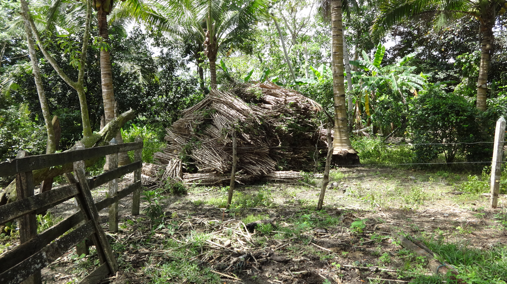
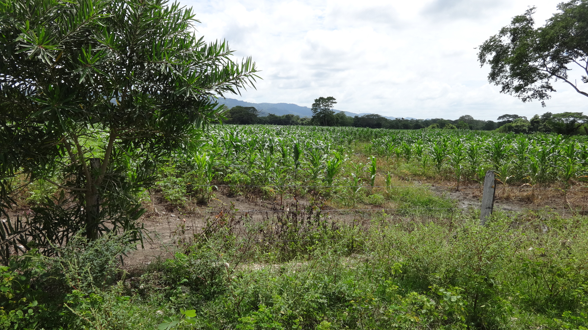
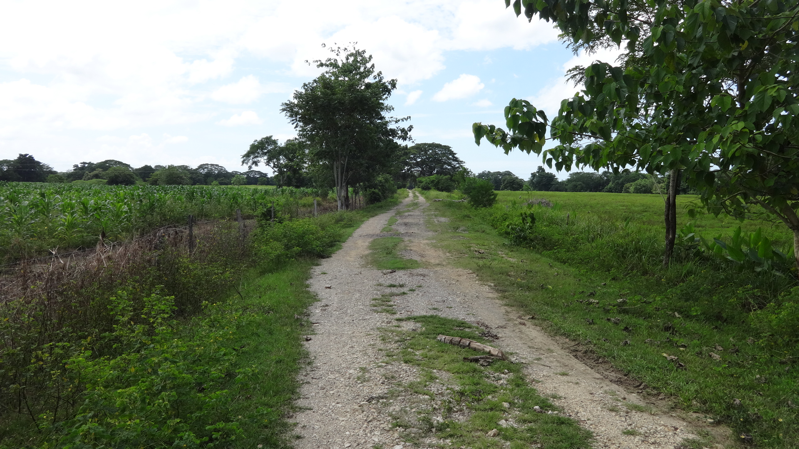
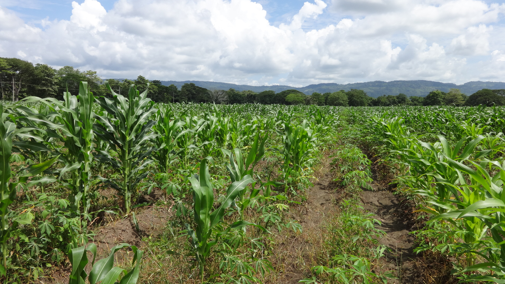

<div class="slider contenedor">
  <ul class="slides">
    <li>
       <!-- random image -->
      <div class="caption center-align">
        <h3>EL AGRO COMO FUENTE DE INGRESOS</h3>
        <h5 class="light grey-text text-lighten-3">En nuestro departamento esta actividad genera multiples empleos</h5>
      </div>
    </li>
    <li>
       <!-- random image -->
      <div class="caption left-align">
        <h3>CULTIVOS PARA USO INDUSTRIAL</h3>
        <h5 class="light grey-text text-lighten-3">Tenemos gran variedad de cultivos para uso industrial,
          entre ellos estan el maíz y la yuca qur gracias a la tipología del suelo, tiene una gran productividad.
        </h5>
      </div>
    </li>
    <li>
       <!-- random image -->
      <div class="caption left-align">
        <h3>USO DE LAS TIC EN EL AGRO</h3>
        <h5 class="light grey-text text-lighten-3">
        Implementar las nuevas tecnologías para optimizar las actividades agrícolas
        es algo fundamental, estamos buscando implementar arduinos en los campos,
        para tener una lectura y realizar seguimeintos y de este modo ayudar al agricultor
        en la toma de desiciones.
        </h5>
      </div>
    </li>
    <li>
 <!-- random image -->
      <div class="caption center-align">
        <h3>AGROINDUSTRIA UN BUEN MOTOR PARA MOVER EL PAÍS</h3>
        
      </div>
    </li>
  </ul>
</div>


